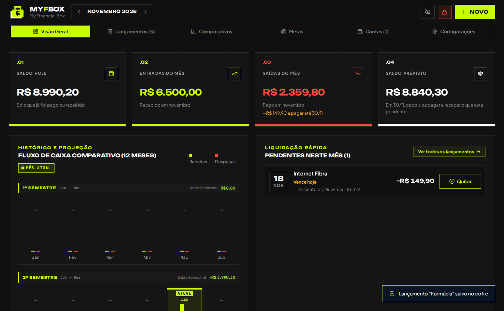

Sem servidor no meio
Não existe conta para criar, senha para recuperar por e-mail nem banco de dados externo recebendo seus lançamentos.
Acompanhe contas, gastos do mês e metas sem criar conta, sem pagar mensalidade e sem entregar seus extratos para ninguém.

Escolha uma tela abaixo para ver como o MyFBox funciona na prática.
A maioria dos aplicativos financeiros ganha dinheiro olhando o que você compra. O MyFBox faz o caminho oposto: tudo roda no seu próprio aparelho.
Não existe conta para criar, senha para recuperar por e-mail nem banco de dados externo recebendo seus lançamentos.
Use no avião, no metrô ou no escritório. O app não consulta APIs de bancos nem serviços externos.
Quer trocar de computador ou celular? Baixe um único arquivo protegido por senha e restaure no outro aparelho.
Os dois usam o mesmo formato de arquivo protegido. Você pode começar no navegador hoje e levar seus dados para o app instalado depois.
Abre direto no navegador, sem instalar nada. Também funciona como aplicativo offline.
Instalador tradicional ou versão portátil em um único arquivo.
Compatível com Mac Apple Silicon (M1/M2/M3/M4) e Intel.
Pacotes prontos em AppImage e .deb (Ubuntu/Debian).
No navegador, eles ficam salvos no armazenamento local do próprio navegador. No app instalado no computador, ficam em um arquivo protegido na sua pasta de usuário.
Não é possível recuperar, porque ninguém além de você tem a chave. Guarde sua senha em um gerenciador de senhas confiável.
Sim. Você pode ter contas e lançamentos em Real, Dólar, Euro e outras moedas, com cotações informadas por você sem depender de internet.
Sim. Além do arquivo de backup protegido por senha, você pode baixar seus lançamentos em CSV a qualquer momento.
Para quem audita código: software livre sob licença AGPL-3.0-or-later, cifrado localmente com AES-256-GCM + PBKDF2-HMAC-SHA256 (600.000 iterações) e suporte opcional a assistentes de IA locais via MCP. Ver código no GitHub.